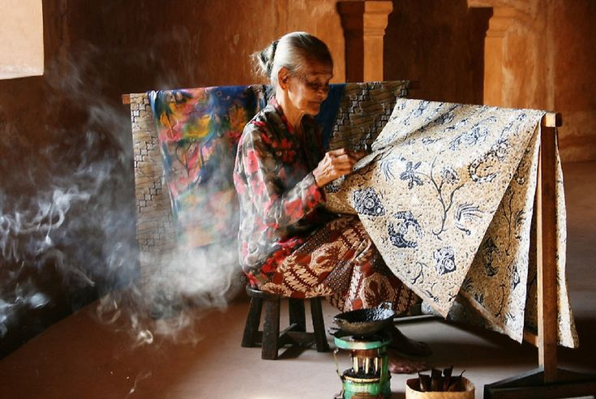
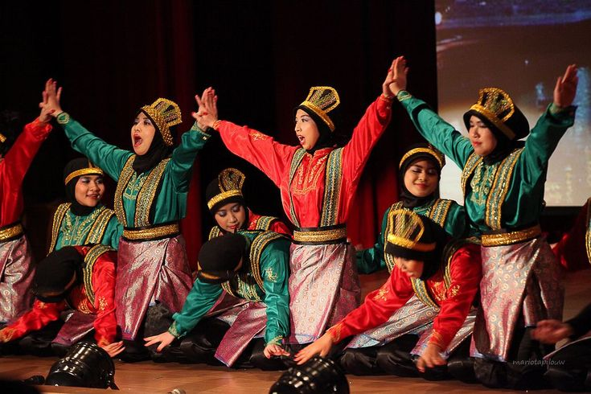
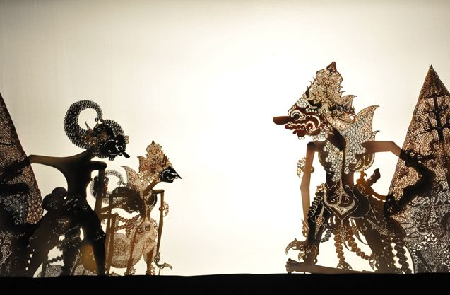

Galeri Warisan Budaya Takbenda

Batik - Seni kain tradisional Indonesia yang diakui UNESCO.

Tari Saman - Tarian tradisional dari Aceh yang terkenal akan kekompakannya.

Wayang Kulit - Seni pertunjukan boneka bayangan dari Jawa.